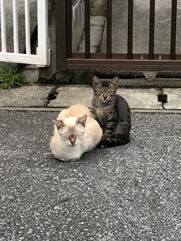

うるがいの話 ある日
最新: かなり寒いうるがいとは 前提知識です
カニの画像をクリックすると『うるがいの話』サイトを表示します|
|
【うるがいの話】 うるがい(ｳﾙｶﾞｲ urugai)とは、『もずくがに』の名前でとても大きくなります。 |
|---|---|
|
|
【Got cat カミマヤーの話】 たながー（ﾀﾅｶﾞｰtanagaa）とは手長えびのことで、何種類かあり大きいのは車 エビぐらいになります。 |

|
【ぶながぁの話】 ぶながー(bunagaa)とは、赤い髪の毛、赤い身体、そして身長は１ｍ２０ｃｍ ぐらい、川の蟹を食べているの目撃された。場所は沖縄県国頭郡大宜味村のと ある村僕の隣近所に住んでいる爺さんから、聞いた話です。 |
|
|
【ギーマの話】 ギーマ(giima)とは、山原の里山に咲くスズランに似た、 花を付けます。実は食べられます、 気が付くと口の周りが紫になっています。 |
2021年10月22日 (金）かなり寒い
15:36

なんと、ヨメがヒターを出している。うー、確かに寒い。２０００年の頃、あ
る雑誌の付録ＣＤに収められていたMIDI(ミディ、Musical Instrument Digital
Interface）で作成された「stand by me」の曲がとても印象に残っている。
ジョンレノンがカバーして歌った曲をＭＰ３にして、デジタルプレイヤーでラ
ンニングの時に聴いていた。ふと、月曜日に音楽ソフトに楽譜を登録し、ギタ
ーで合奏したらと考えついた。おバカである、あの特徴のあるベースの音はと
てもとても低い！、気づいたのは翌日の火曜日、参考にしている楽譜が悪いの
かと二つ登録する。楽譜ソフトで選択できる５０程の楽器で演奏させてみる。
そもそも、この低音の楽器とは何と調べると「ウッドベース」というものと分
かる。ただし、ウッドベースというのは楽譜ソフトに無いので代替を捜す、コ
ントラバスもいいとネットであったので試したが、全然イマイチである。楽譜
の音階が低すぎるのである、キーを２音上げる事した。ま、何とか出来た。途
中、こんな難儀な事をして・・・と思ったが、諦めない気持ち（暇だし）で完
成、それも参考にした二つの楽譜２曲を作った。昨日、仕掛中だがギターで合
奏してみた。おお！、苦労のかいがあった。仕掛だった曲を、今朝出来上がっ
た。実質４日間である、お陰で移調やヘ短調の扱いも、バリバリになった。と
ころで、「stand by me」とは「そばにいて」と邦訳されている確かに一人は
寂しい。
１曲目 ３分５秒
作品１１番（ユチューブ）
２曲目 ３分２５秒
作品１３番（ユチューブ）
いろいろな楽器を選んで演奏してみたが、ベースの音はエレクトリックグラン
ドピアノで演奏した。